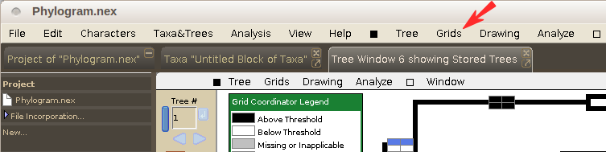
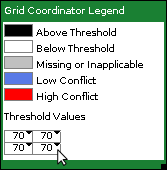

Manipulating Hypha display options
After the grids are drawn on the tree, you may change the display options from the menu. (see the set up instructions if the grids have not yet been drawn)

Options available from the menu:
| Option | Default | Explanation |
|---|---|---|
| Height: 10 Width: 20 |
Sets the height and width of the individual cells. All cells will be the same height & width, and the cells can have a height between 4-20 pixels, and a width between 8-40 pixels. | |
| Black | These options allow you to dictate which colors to use. The color choices are applied to all cells in the grid. | |
| White | ||
| Grey | ||
| Light Blue | ||
| Red | ||
| On | Colors cells based on whether corresponding value is above or below the threshold or missing/inapplicable. If this option is turned off, all cells will be colored white (this may be desired if the values are shown, see next option). | |
| Off | Includes text of values in cell. If this option is turned on, the values from the support value trees will be shown in the cells of the display tree. Missing or inapplicable values will be shown as dashes (-) if (see below) is turned on. | |
| Off | Indicates missing or inapplicable values by (-) when option is turned on. If this is off, no text is drawn in cells with missing or inapplicable values. This option is only available if is turned on. | |
| On | Draws a border around the grids when turned on; no border will be drawn if option is turned off. | |
| On | Formats graphics so grids are displayed properly in exported PDF files. If this option is turned on, there may be slight imperfections in Mesquite's display of the grids, but users are encouraged to leave this option on if PDF-quality images are desired. | |
| Sans serif | The font to use for cell values (only applicable if is turned on). | |
| 10 | The font size to use for cell values (only applicable if is turned on). |
Options available from the Grid Coordinator Legend, which act only on the settings for the corresponding cell, not the entire grid. To edit the settings for a cell, click on the black triangle in the corresponding grid in the Grid Coordinator Legend:

| Option | Explanation |
|---|---|
| Set Threshold... | Sets the threshold value to use for that cell. |
| Set Significant Digits... | Sets the number of significant digits (to the right of the decimal) to display if Cell Values are displayed. |
| Set Number For Node... | Use this option if the support values are stored in a different format than indicated during the initial setup (i.e. if you selected Branch Lengths for Node from Other Tree, but the support values are stored as Branch Labels, you can use this option to reflect the proper support value storage). |
| Tree Source (for Branch Labels/Lengths for Node from Other Tree) | Sets the source of trees to use for support value trees for that cell. You will not likely change this setting. |
| Choose Tree... | Chooses the tree to use for support value. |
| Tree Block (for Branch Labels/Lengths for Node from Other Tree) | Sets the tree block to use for support value trees for that cell. This will be necessary to use when initially setting up the Grid Coordinator. |